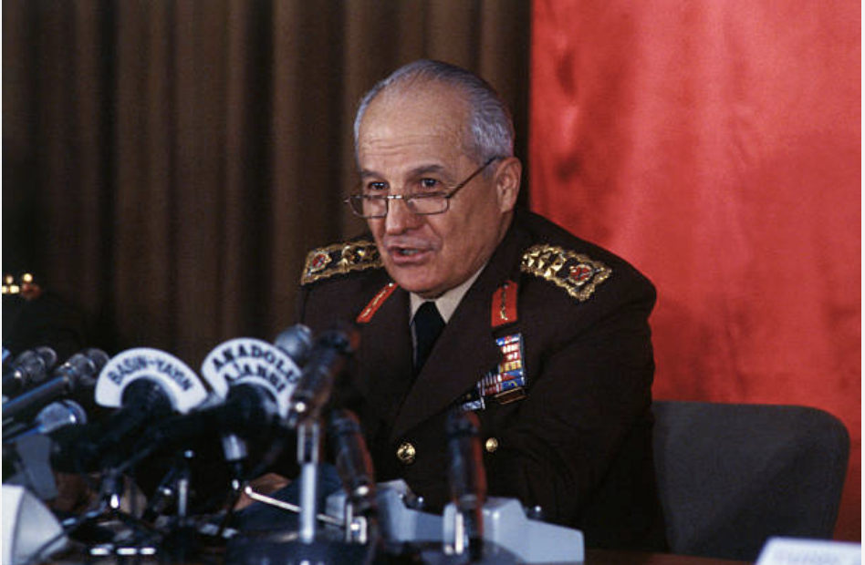
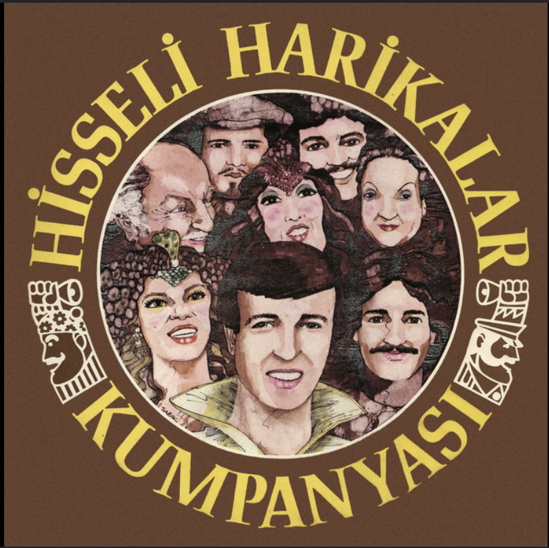
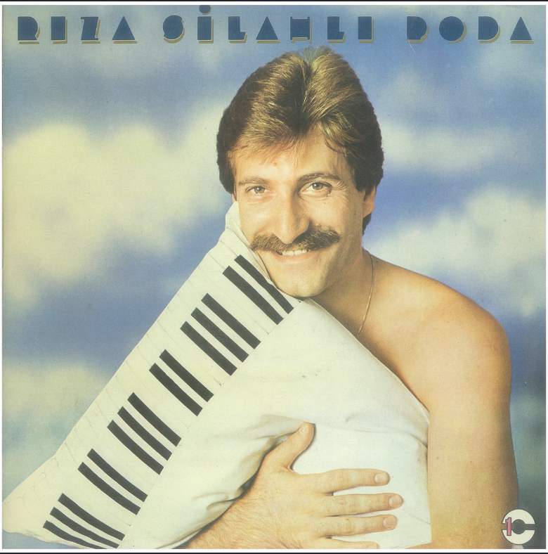

24 января
24 января 1980 года правительство Демиреля опубликует экономическую программу, которую подготовил замглавы правительства Тургут Озал. Это был разрыв с предыдущими тридцатью годами турецкой экономики.
Турция 1970-х входила в кризис постепенно, а к 1979-му уже тонула. Очереди за бензином растянулись на кварталы — нефтяной шок бил по стране, лишённой валютных резервов. Карточная система на сахар и подсолнечное масло. Инфляция — за сотню процентов. Чёрный рынок кормил тех, кто умел им пользоваться. Государственные предприятия работали в убыток, субсидии пожирали бюджет.
Программа 24 января была написана в спешке, при участии МВФ, и её логика была проста: открыть страну рынку. Лира девальвировала на 32,7% — с 47 до 70 за доллар, а к концу года дойдёт до 90. Государство уходило из экономики: субсидии на удобрения, энергию и транспорт урезались или отменялись. Тарифы на импорт снижались. Иностранный капитал получал новые возможности. Экспортёры — льготные кредиты и налоговые скидки. Обязательная продажа валютной выручки государству отменялась.
Сам Озал скажет потом, что это был не просто экономический манёвр, а смена модели. Импортозамещающая индустриализация — турецкий путь с 1950-х — уступала место экспортно-ориентированной экономике. Турция разворачивалась лицом к мировому рынку.
Программа начала работать только после переворота — с осени, когда военные убрали политические препятствия. Озал остался в новом правительстве в том же кресле. Реальные последствия скажутся в 1983–1987 годах — и будут называться «Озал-эпохой».


12 сентября
В пятницу, 12 сентября 1980 года, в 03:59 по местному времени радио Турции вышло в эфир с маршем Истикляль. За ним последовал Боевой марш. Затем — зачитано обращение Совета национальной безопасности №1, подписанное начальником Генерального штаба генералом Кенаном Эвреном. Парламент распущен, правительство отправлено в отставку, по всей стране введено чрезвычайное положение. С 5 утра — комендантский час до отмены.
Страна к этому моменту уже восемь лет шла к этой ночи. 1971-й дал первое предупреждение — «меморандумный переворот», без танков, но с ультиматумом. Потом — относительное затишье. Потом — Кипр, эмбарго, экономический кризис, и с середины 1970-х страна погрузилась в политическое насилие, которое к 1980 году превратилось в хроническую войну. Левые против правых, националисты против коммунистов, исламисты против всех. Кахраманмараш в 1978-м — 105 убитых за несколько дней. Чорум. Фатса.
Только в 1980 году в стране произошло около 10 000 террористических эпизодов. Более 2 000 человек убиты. Ежедневно в среднем — больше пяти смертей от политического насилия. ВНСТ не мог избрать президента: 6 апреля закончился срок Фахри Коруптюрка, и за несколько месяцев прошло более ста туров голосования — безрезультатно. АП Демиреля, CHP Эджевита: ни у кого не было большинства, ни у кого не было воли к компромиссу.


Военные предупредили. 27 декабря 1979 года Эврен и командующие родами войск направили открытое письмо президенту: страна на пороге гражданской войны, политики должны действовать. Письмо проигнорировали. 9 месяцев спустя они действовали сами.
Операция «Байрак» — «Флаг» — прошла без единого выстрела. Армия знала, что делает. Эджевит и Демирель задержаны у своих домов и этапированы на военные базы. Неджметтин Эрбакан арестован в Гелиболу. Алпарслан Тюркеш — в Измире. 16 сентября все гражданские партии были приостановлены. 15 октября 1981 года — ликвидированы официально.
Совет национальной безопасности состоял из пяти человек — по одному от каждого рода войск. Это была не толпа заговорщиков, а вертикаль армейской иерархии, просто переехавшая в президентский дворец. Эврен — начальник Генштаба, первый среди равных. Рядом: генерал Нуреттин Эрсин — главком сухопутных войск, фактически второй человек хунты, координировавший военные трибуналы и массовые аресты по всей стране. Генерал Тахсин Шахинкая — ВВС; впоследствии окажется, что он богатейший из пятерых — Time включит его в список богатейших генералов мира на фоне скандала с закупкой американских F-16. Адмирал Неджат Тюмер — ВМС, следил за портами и морскими границами, через которые радикалы пытались бежать или ввезти оружие. Генерал Седат Джеласун — командующий жандармерией; его люди проводили зачистки в провинциях, где сухопутные войска были лишними.
Экономику военные отдали штатскому. Тургут Озал не входил в СНБ — но именно он, оставшись вице-премьером по экономике, под крылом хунты делал то, что никакое гражданское правительство не решилось бы сделать в мирное время: открывал рынок, убирал госрегулирование цен, запускал иностранный капитал. Генералы зачищали улицы — Озал перестраивал экономику. Союз был прагматичным и очень продуктивным для обоих.
18 сентября сформировано гражданское правительство — под военным контролем. Премьером стал отставной адмирал Бюлент Улусу.
Военные трибуналы работали без остановки. К 1983 году через систему задержаний прошло около 650 тысяч человек. 230 тысяч предстали перед трибуналами. Официально казнены 50 человек — 18 левых, 8 правых, остальные за уголовные преступления. Сколько погибло в тюрьмах от пыток или просто исчезло — точно не считалось.
13 декабря 1980-го повешен Эрдал Эрен — ему было семнадцать, когда его задержали.
Страна замолчала. Не только от страха — хотя и от него тоже. Просто после десяти лет насилия многие приняли переворот как неизбежное. Это молчаливое согласие стало главным капиталом военных.
Эврен проживёт ещё долго. После 1989-го уйдёт на покой в Мармарис, будет писать маслом картины, выглядеть уважаемым государственным пенсионером. В 2010-м парламент отменит статью конституции, дававшую организаторам переворота иммунитет от уголовного преследования. В 2012-м, когда Эврену исполнится 94 года, против него возбудят дело. Слишком старый, чтобы приходить в суд — давал показания по видеосвязи из военного госпиталя. В 2014-м суд приговорит его к пожизненному заключению и разжалует из генералов в рядовые. Он умрёт 9 мая 2015-го, в 97 лет, так и не попав в настоящую камеру. На похоронах — ни одной ведущей партии. У ворот — родственники жертв.


Жертвы
После 12 сентября военные трибуналы заработали немедленно. Восемь лет в Турции не вешали — последний раз смертная казнь приводилась в исполнение в 1972-м. Теперь это вернулось.
8 октября казнены двое: правый Мустафа Пехливаноглу — осуждённый за убийство, совершённое в эпоху политического насилия, — и левый Недждет Адали. Один справа, один слева. Военные демонстрировали симметрию: для новой власти идеология не имела значения, имело значение преступление. Это был сигнал всем.
Ильхан Эрдост. Издатель, основатель левого издательства «Онур». 10 ноября конвой вёз его в тюрьму Мамак в Анкаре. По дороге забили. Официальная версия: «скончался при невыясненных обстоятельствах». Имя «Мамак» с тех пор означало не только тюрьму, но и то, что происходило до неё и по дороге к ней.
Эрдал Эрен был учеником профессионального лицея — семнадцать лет, Анкара. 2 февраля 1980 года, ещё до переворота, вышел на запрещённую демонстрацию левых: люди митинговали после убийства активиста Синана Сунера. В ходе разгона был смертельно ранен рядовой жандармерии Зекерия Онге. Эрена задержали неподалёку с оружием и обвинили в убийстве.
Защита провела баллистическую экспертизу: пуля вошла в солдата сзади и с большого расстояния, Эрен в тот момент находился совсем в другом месте. Скорее всего — дружественный огонь или третья сторона. Суд эти доводы не принял. Верховный апелляционный суд дважды отменял смертный приговор из-за процессуальных нарушений — и оба раза Совет национальной безопасности возвращал дело. Машина работала в одну сторону.
Оставалось одно препятствие: по турецкому закону несовершеннолетних нельзя приговаривать к смерти. Выход нашли административный — в документах переправили дату рождения. Суд официально признал Эрена совершеннолетним. 13 декабря 1980 года он был повешен.
Генерал Эврен впоследствии говорил о таких казнях: «Что ж нам, кормить их в тюрьме вместо того, чтобы повесить?» Это была не оговорка — это была позиция.
Фатса
Фатса — небольшой город на Черноморском побережье. Весной 1980 года он стал символом. Здесь действовала параллельная власть: мэр Хикмет Акдоган из партии Девримджи Йол («Дев-Йол»), левацкие дружины контролировали кварталы, чужих в город не пускали. Турецкая пресса писала о «освобождённой зоне».
9 июля 1980 года армия вошла в Фатсу. Два офицера похищены боевиками Дев-Йол за два дня до этого — немедленный повод. Командос и жандармы оцепили город. Над 500 людьми учинили аресты. 12 июля силовые структуры взяли город под полный контроль.
Фатса была не уникальна — похожие «освобождённые районы» существовали в нескольких городах. Но именно Фатса стала фокусной точкой, потому что здесь власть ушла дальше всего: местная самоорганизация, кооперативы, свои суды. Для левых — модель народной демократии. Для военных и прессы — угроза государственной целостности.
После 12 сентября мэр Акдоган был арестован. Фатса вернулась в привычный административный формат. Но её имя осталось в языке — как метафора и как вопрос, который не получил ответа: где граница между самоуправлением и параллельным государством?

Бюлент Эрсой
3 сентября 1980 года — за девять дней до переворота — измирская прокуратура выдала ордер на арест Бюлента Эрсоя. Повод: «непристойные позы на сцене». Но это была не причина, а предлог. Причина была в том, что Эрсой на глазах у всей страны превращался из мужчины в женщину — и перестал это скрывать.

К 1980-му Бюлент Эрсой был одним из крупнейших исполнителей фасыл и арабеска. Голос — редкий по диапазону и выразительности. Залы — полные. Но на сцене он появлялся в женской одежде, с макияжем и украшениями, проходил гормональное лечение — и пресса следила за каждым изменением его облика с той смесью восторга и омерзения, которая всегда сопровождает неудобную знаменитость.
Арест в сентябре 1980-го был только началом. После переворота 12 сентября новая власть ввела сценический запрет — поначалу негласный, потом оформленный официально. С 1981 по 1987 год Бюлент Эрсой не мог выступать. Запрет продлевала одна инстанция за другой: полиция, губернаторство, Госсовет, Верховный суд. Каждый раз находился новый правовой крючок.
В апреле 1981-го в Великобритании Эрсой перенёс операцию по смене пола. Именно в эти дни в стамбульских кинотеатрах шёл фильм «Şöhretin Sonu» («Конец славы») — полудокументальная картина об «деле Бюлента Эрсоя» с его же участием: архивные съёмки со сцены Lunapark Gazinosu в Измире, газетные вырезки, мелодраматический сюжет о том, как певец, одумавшись, возвращается к нормальной жизни. Фильм давал ответ на вопрос, который тогда задавала вся страна, — и ответ был: одумается, всё будет хорошо. Об операции в сюжете не говорилось ни слова.
Юридическая ситуация после операции превратилась в абсурд, который сам Эрсой сформулировал в 1982 году: «Раз меня не признают женщиной, и мужчиной я больше не являюсь — в какую баню мне идти? В какой туалет? Кто будет досматривать меня в аэропорту — мужчина или женщина? В какую камеру меня посадят — мужскую или женскую?» Официальная медицина, в лице музыканта и врача Алааддина Явашчи, выдала заключение: «Является суниdir, является женщиной, но не полностью — не может рожать, не может вступать в половые отношения как женщина». Юридически — всё ещё мужчина. А мужчинам выходить на сцену в женской одежде запрещено. Комикам — например Сейфи Дурсуноглу в образе Huysuz Virjin — можно: комедия. Бюленту Эрсою — нельзя.
Депутат ТБММ от Партии справедливости Ахмет Булданлы цитировал газетные заголовки с трибуны парламента и называл Эрсоя «существом неизвестной принадлежности». Друг из консерватории говорил ему в лицо: «Вокруг тебя ходят грязные слухи, газеты объявили тебя позором общества». Отец: «Ты позор общества, лакмусовая бумажка, которую приклеили к моему лбу». Дублёр Гюнер Юмит, много лет озвучивавший Эрсоя в кино, отказался продолжать работу.
В августе 1987 года Эрсой написал письмо премьер-министру Тургуту Озалу. Центральная фраза: «Я не убийца, не шлюха, не вор, не предатель родины, не анархист». Мурат Бельге прокомментировал в Yeni Gündem: «В этой стране понятия 'шлюха' или 'анархист' немного запутаны. Это не описание того, кем человек является — это ярлыки, которые официальная власть навешивает на неудобных людей».
В январе 1988 года запрет сняли. Три месяца спустя через изменение в Гражданском кодексе Эрсой получила розовое удостоверение личности — женское. Первый концерт после семилетнего перерыва прошёл в стамбульском Lunapark Gazinosu. Первый цветок со сцены она приняла от Семры Озал. За столиком кто-то крикнул: «По блату запрет сняла?» Эрсой ответила: «Я взяла то, что мне причиталось».
Джем Карадже, сам лишённый сцены после переворота и живший в эмиграции, сказал об этом в 1987 году: «Когда речь заходит о демократическом шаге турецкого общества — снятие запрета с Бюлента Эрсоя в пятьдесят раз важнее снятия запрета с четырёх испытанных политиков. Её голос и манера исполнения принадлежат народу независимо от любых запретов. То, что ниже пояса — её личное дело».
Биография Бюлента Эрсоя в эти годы точно совпадала с переломными моментами Турции: 24 января, 12 сентября, выборы 1983-го, референдум 1987-го. Страна менялась — и она менялась вместе с ней, только в обратную сторону от того, чего от неё ждали.


Independenta
В ноябре 1979 года в 05:30 утра румынский танкер «Индепенденца» — 150 тысяч брутто-регистровых тонн, на борту 96 тысяч тонн сырой нефти — проходил Босфор курсом на Констанцу. У Хайдарпаши он столкнулся с греческим каботажным судном «Эвриали». Вспышка была видна с Кадыкёя. Стёкла вылетели в домах по обоим берегам. Те, кто жил подальше от берега, решили — землетрясение. Те, кто знал о политической ситуации, решили — диверсия иностранной державы.
Горела не только нефть — горело море. Сырая нефть разлилась по поверхности и занялась. Танкер горел месяц. Чёрный дым накрыл Стамбул на несколько дней — небо стало серо-чёрным, солнца не было видно. На двадцать второй день остатки нефти в корпусе дали второй взрыв — поменьше первого, но снова пожар. Судно в итоге сгорело дотла.
43 члена экипажа погибли. Тела некоторых в последующие дни прибивало к берегу — обгоревшие.
Вдоль берега собрались тысячи — смотреть. Никто не думал о втором взрыве. На мелководье у берега хрустело стекло — осколки от витражей и оконных рам, разлетевшихся в момент первого удара. Витражи Linneman в одном из прибрежных зданий были разрушены — реставрация завершилась только в 1983 году.
Паромное сообщение остановилось полностью: все маршруты Стамбул — Кадыкёй, Стамбул — Хайдарпаша, Стамбул — Острова, Стамбул — Ялова, Мудания — отменены. Азиатскую часть города отрезало от европейской. Весь автобусный парк ИЕТТ и служебные машины бросили на переправу людей через мосты.
Нефть не исчезла вместе с огнём. Она осела на поверхности Босфора плёнкой и оставалась там месяцами. Дно пролива погибло почти полностью: смертность придонных организмов оценивалась в 96 процентов. Рыбу в Стамбуле перестали есть — долго. Не по указу, а просто потому что все понимали, откуда она.
Ликвидацию обломков поручили военно-морскому флоту, те передали подрядчику. Подрядчик в 1983 году обанкротился. Нашли другого. В апреле 1987 года остов «Индепенденцы» наконец начали буксировать в сторону Тузлы.
Семь лет полузатопленный танкер стоял в Босфоре — как памятник тому, что бывает, когда ничего не успевают убрать вовремя. В 1980 году, когда страна разбиралась с переворотом, с арестами, с комендантским часом, горящий пролив был ещё свежей раной — и никто особенно не торопился её лечить.
Футбол
1979/80 сезон завершился чемпионством «Трабзонспора» — второй титул подряд для клуба с черноморского побережья. Трабзон делал то, что казалось невозможным: громил стамбульскую гегемонию год за годом.
До середины 1970-х чемпионат Турции был вотчиной трёх стамбульских клубов — «Галатасарая», «Фенербахче» и «Бешикташа». «Трабзонспор» первый раз выиграл лигу в 1975/76, и это было сенсацией. Потом выиграл ещё раз. И ещё. К 1980-му это была уже dynasty: клуб, который играл лучше, быстрее и злее, чем столичные гранды.
Символом команды был нападающий Хюсейн Чимшир — стремительный, непредсказуемый. В том сезоне «Трабзонспор» финишировал первым с комфортным отрывом. Третий титул подряд придёт в 1981-м.
В 1980-м, однако, не до футбола было всерьёз никому. Сезон доигрывали в условиях нарастающего хаоса, а осенью 1980-го, уже под военными, лига стартовала снова — с запретом на выезд болельщиков на выездные матчи. Так военные лечили насилие на стадионах: убирали толпу. Способ грубый, но в том году всё делалось грубо.

Йешильчам
Кино. В 1980 году турецкое кино производило около двухсот фильмов в год. Почти все — на студиях Йешильчама, стамбульской улицы, ставшей именем целой эпохи. Мелодрамы, боевики, комедии, эротика на грани цензуры. Кинотеатры — в каждом городе, в каждом районе. Это была индустрия.
Йешильчам родился в 1950-х и расцвёл в 1960–70-х. Его звёзды были народными героями: Тюркан Шорай — «Султан», Хюля Кочийит — драматическая героиня, Кемаль Сунал — комедийный простак, которого все любят, Таргын Пейами Шаркан — злодей на миллион лир. Режиссёры снимали по несколько фильмов в год. Бюджеты были смешными, декорации — бумажными, но зал был полным.
К 1980-му эта система уже трещала. Видеомагнитофон ещё не убил кинотеатры — но телевизор уже конкурировал. Военный переворот добавил проблем: цензура ужесточилась, часть сюжетов стала невозможной, часть режиссёров замолчала. Производство начнёт падать.
Через пять лет Йешильчам как система перестанет существовать. Кино останется — но другим. Без двухсот фильмов в год, без той наивной энергии, с которой снимали всё подряд и надеялись на лучшее. Несколько режиссёров следующего поколения — Йылмаз Гюней уже за решёткой, Ömer Kavur только начинает — попробуют делать кино иначе: медленнее, серьёзнее, с оглядкой на Европу. Но эпоха Йешильчама — это 1980-й, последний год настоящего изобилия.


Кыраатхане
Общество. Кыраатхане — это не просто кафе. Это институт. В турецком городе и деревне кыраатхане был местом, где мужчины собирались каждый день: пить чай, играть в нарды и карты, читать газеты, слушать радио, говорить о политике, погоде, ценах и соседях.

В 1980-м кыраатхане переживал свой последний золотой век. Телевизор уже стоял во многих домах, но ещё не победил окончательно: в кыраатхане был свой экран, своя аудитория, своя атмосфера. Политические дебаты — которых в 1970-х было через край — после переворота поутихли. Но место осталось. Люди всё равно приходили.
Кыраатхане — это мужское пространство почти без исключений. Женщин туда не пускали — не по закону, а по обычаю, что в данном случае работало надёжнее. Это была параллельная социальная жизнь, невидимая половине населения.
В 1980-е кыраатхане начнёт медленно уступать место видеосалонам и кофейням нового типа. Но его логика — сообщество мужчин, объединённых не работой и не семьёй, а просто привычкой быть рядом — никуда не денется. Она просто переедет в другие форматы.
Даллас
6 ноября 1980 года TRT показал первый эпизод американского сериала «Даллас». Страна сидела под комендантским часом. Пятница стала священным вечером.
Сериал про техасских нефтяников семьи Юинг шёл в США с 1978 года. В Турцию пришёл с опозданием — и попал в абсолютно правильный момент. Именно в ноябре 1980-го, когда партии запрещены, газеты под военной цензурой, а политика стала опасным словом, страна получила пятничный сериал про богатых, злых, красивых людей в Техасе. TRT транслировал его в чёрно-белом — большинство телевизоров ещё не знали цвета. Видеоклубы, только-только появившиеся, сдавали кассеты «Далласа» в цвете — и с ещё не показанными по ТРТ сериями. Очередь за кассетой была не короче очереди за сахаром.
J.R. Юинг — Джей-Ар — стал первым по-настоящему общим персонажем турецкого телеэкрана. Злодей, которого никто не уважал и все любили. TV'de 7 Gün писал: «Скажите — видели ли вы кого-то столь же любимого, как Dallas JR? Все говорят 'этот сын дьявола сам по себе'... Говорят — но этот злодей...». Мужчины стали называть друг друга «Джейар» — в шутку, но привычка прилипала. Карикатурист Джан Дюндар вспоминал, что однажды военные вызвали его на допрос из-за карикатуры с персонажами Далласа.
Корреспонденты турецких газет звонили напрямую в продюсерский офис в Техасе с главным вопросом лета 1980 года: «Кто убил Джей-Ара?» Те не говорили. Hürriyet публиковал это как новость.
Реакция на сериал разделила культурное пространство надвое. Защитники консервативной прессы негодовали. Ахмет Кабаклы в Tercüman писал, что как только «Даллас» закончился, TRT тут же поставил «Üç İstanbul» — и клеймил это как произведение, «написанное чтобы попасть в милость больших и стать депутатом», которое «позорит турецкую историю и нагло нападает на Султана Хамита». «Даллас» хотя бы честно был чужим. «Üç İstanbul» — своим и при этом вредным.
Турецкая поп-культура «Даллас» переварила немедленно. На пластиночном лейбле Karnaval в Унджапаны вышла «Dallasiye (Suyu Kendinden)» — «Из себя» — с текстом: «Шехназ, Шехназ, не кокетничай / Посмотрим немного Даллас / Посмотрим немного Джей-Ара / Какие хорошие роли играют — продают нефтяной газ». Мастер комедийных пластинок Хюршид Йенигюн переделал традиционную свадебную песню про женихов: «Его зовут Энгин, отец богатый — хочу папу / Его зовут Омер, папа банкир — хочу папу / Его зовут Джейар, мозолит глаза — не хочу папу». Журнал Hey в марте 1981-го публиковал объявление: за 350 лир — обычная кассета, за 500 — качественная, по адресу в Сиркеджи, обещали «постер JR с невинной улыбкой и оригинальную Dallas-кассету». Большой сюрприз: деньги присылали, кассету действительно отправляли. Мошенничества не было — был бизнес.
Параллельно с «Далласом» TRT показывал «Аşk Gemisi», «Flamingo Yolu» и «Beyaz Gölge» — американский сериал про баскетбол в школе Carver High в Лос-Анджелесе. Milliyet писал про влияние «Белой тени»: «Теперь по всей стране между домами на деревьях и столбах вешают корзины, ставят стулья, и с дешёвыми мячами начинают баскетбол. Мальчики называют тренера 'Коч', старшие называют младших именами персонажей — Салами, Торп, Кулидж». Пилот «Белой тени» был показан ещё летом 1980-го, одобрен — и сериал стал первым популярным сериалом после 12 Сентября. «Военный режим, видимо, не мог найти лучшего идеала — держать молодёжь подальше от политики и направить к спорту».
«Dynasty» с Джоан Коллинз TRT вообще не показывал. Но видеоклубы создали фанатизм вокруг него отдельно от эфира.
Журнал TV'de 7 Gün вышел 7 сентября 1981 с обложкой «DALLAS BİTTİ» — «Даллас кончился». Страна немного осиротела. Потом пришли бразильские и мексиканские сериалы — «Рабыня Изаура», «Вирджиния», «Маленькая барышня», «Богатые тоже плачут». Дерья Бенги назвала это «латинеском». «Даллас» открыл дверь — и в неё вошли все остальные.

«Imagine all the people sharing all the world...»
В декабре 1980-го эти строчки Леннона звучали как хрупкий, неосуществимый манифест в закрытой под комендантским часом Турции.
Джон Леннон
8 декабря 1980 года у входа в нью-йоркский Дакота-апартмент Марк Чепмен выстрелил в Джона Леннона четыре раза. Леннон умер через двадцать минут. В Турции шёл четвёртый месяц военного правления. «Imagine» прозвучала особенно горько.

Чепмен приехал с Гавайев. Был поклонником — настоящим, до одержимости. Потом что-то перевернулось: чем правее он становился, тем больше видел в Ленноне лжеца. Миллионер, поющий об отсутствии собственности. Человек, призывающий представить мир без границ, — за стеной охраняемого элитного дома на Манхэттене. Чепмен отождествлял себя с Холденом Колфилдом из «Над пропастью во ржи» — юношей, ненавидящим фальшь и «притворщиков». В кармане у него была эта книга. В руке — только что подписанная Ленноном пластинка «Double Fantasy».
Он дождался, пока Леннон выйдет из машины. Окликнул: «Мистер Леннон» — и выстрелил в спину. Четыре пули. Леннон дошёл до дежурной комнаты здания и упал. В Рузвельт-госпиталь его доставили уже без сознания.
Time вышел с обложкой: «When the Music Died» — «Когда умерла музыка». Портрет Леннона. Дата: 22 декабря 1980.
В Турции об этом узнали ночью — по радио, по первым выпускам газет. Турецкий журналист Исмаил Агам был в тот момент в Нью-Йорке. Ехал в такси, услышал новость — и сказал водителю что-то вроде: «Это было предсказуемо. Ленноновский идеализм никогда не вписывался в американскую реальность». Потом вспоминал, что сам себя не узнал в тот момент — циничная фраза вырвалась раньше, чем горе.
У Дакота-апартмент в Нью-Йорке собрались тысячи. В Стамбуле — несколько десятков молодых людей у американского консульства, стихийно, без объявления. Пели «Imagine».
Зюльфю Ливанели — турецкий музыкант и поэт, в 1980-м уже живший в эмиграции (власти выдавили его из страны раньше) — написал о Ленноне в личном измерении: оба были голосами, которые власть предпочла бы заглушить. Только один — пулей, другой — запретом.
«Imagine» в Турции 1980 года слышали не так, как в остальном мире. Строчка «Imagine there's no countries» — «Представь, что нет стран» — звучала в стране, где только что была введена военная цензура, где политические партии распускались одна за другой, где слово «представь» само по себе казалось вызовом. Карикатурист Нехар Тюблек нарисовал для Gırgır карикатуру — Леннон с гитарой и подписью в духе: приговор идеализму вынесен.
1980-й год складывался именно так: Рейган выиграл выборы у Картера, Тэтчер правила год в Британии, Иран и Ирак начали войну, Польша бастовала, СССР сидел в Афганистане, Турция жила под переворотом. И в декабре — Леннон. Как будто мир закрывал одну большую главу, и делал это без церемоний.
«Нафантазируй: что если бы Джон Леннон жил так, как думал» — написала Дерья Бенги в эпиграфе к этому разделу. Ответа нет. Есть только плакат с надписью «IMAGINE JOHN LENNON LIVES» — на чёрно-белой фотографии толпы, сделанной где-то в декабре 1980-го.

Петрол
19 апреля 1980 года в Гааге Аджда Пеккан вышла на сцену Евровидения с песней «Petrol». Турция страдала от нефтяного кризиса, очереди за бензином тянулись на кварталы — и в этот момент страна отправила на главный песенный конкурс Европы песню про нефть. Точнее, про любовь к нефтяному денди по имени Pet'r Oil.

Автор слов Шанар Юрдатапан объяснял замысел просто: написать на Евровидении настоящую политическую песню — значит вылететь в первом же туре. Поэтому он выбрал иронию. «Petrol» — история женщины, влюблённой в богатого иностранца: «Ты слишком горд, мне до тебя не добраться / Кто знает, кровь скольких влюблённых в тебе / Ни о чём, кроме долларов и марок / Сколько я от тебя натерпелась». Pet'r Oil — нефть, западный капитал, зависимость — всё в одном образе. Юрдатапан думал, что это пройдёт. Ошибся: скандал начался ещё до Гааги.
TRT нервничала. Слова казались чиновникам опасными. Генеральный директор Доган Касароглу давил на Юрдатапана через посредников: менять. Юрдатапан не соглашался. Оздемироглу — автор музыки, человек между двух огней — молчал. Когда давление дошло до Шанара Юрдатапана прямо, тот сказал: «Ничего опасного в словах нет. Они даже в Европе встретят положительный отклик. Я не буду менять, и рискую осознанно». TRT боялась, что арабские страны обидятся на «Aman petrol» — за год до этого на Евровидение в Иерусалиме из-за арабского эмбарго не пустили Марию Риту Эпик. Так и не тронули слова — но боялись до последнего.
На внутреннем отборе 24 февраля конкуренты у Пеккан были серьёзные. Нюкхет Дуру, Танджу Окан, Айла Алган, Сезен Аксу, Ибо — весь цвет тогдашней эстрады. И Барыш Манчо. Из пяти отобранных композиторов победил Атилла Оздемироглу — с «Petrol». Телевизионный тур, 22 человека в жюри, прямой эфир. Аджда получила больше всех голосов.
В Гааге Пеккан готовилась серьёзно — и нервничала. Когда выяснилось, что по программе Çanakkale Zaferi на TRT поставят фильм «Çanakkale Aslanları», в котором она играет гречанку, менеджеры тут же позвонили на TRT: снять. Сняли. Аджда позировала журналистам на бензоколонках с бензиновым шлангом в руках — реклама «Petrol» совпадала с хроникой нефтяного кризиса буквально. В клипе дорогой Mercedes везли два коня — потому что бензина не хватало.
Финал 19 апреля шёл в прямой трансляции. «Petrol» взяла 3 очка от Австрии, 8 от Италии, 12 от Марокко — и финишировала 15-й. Победил Джонни Логан от Ирландии с «What's Another Year». Ирония в том, что Логан потом станет в Турции своим человеком — женится на Бурчин Орхон, будет регулярно приезжать с концертами.
Но главное случилось не в подсчёте очков. Юрдатапан вышел к микрофону — микрофон был в руках у Бюлента Озверена — и в прямом эфире рассказал всей стране о давлении TRT на слова песни. Оздемироглу стоял рядом и молчал. Касароглу в Гааге не приехал, прислал начальника телевизионного отдела. Юрдатапан вручил тому свой трофей.
На следующий день Оздемироглу в прессе осудил Юрдатапана: «Я рассказал ему об этом в частном порядке, а он вынес это на публику. Я осуждаю его за это». Касароглу назвал произошедшее «дешёвым героизмом» и «бестактностью». В Hey Доган Касароглу был ещё жёстче: «Шанар Юрдатапан, захватив микрофон, без труда завладел им и спокойно обвинял своё учреждение на глазах у жюри, у зрителей у экранов — и этим вызвал антипатию». В Cumhuriyet Ильхан Селчук объяснял позицию Юрдатапана иначе: «TRT день ото дня превращается в очаг борьбы с левыми».
Зеки Мюрен дал интервью Cumhuriyet. «Я бы не поехал с такой песней,» — сказал он. — «Наша страна страдает от нехватки нефти. Той зимой у меня дома не было газа несколько дней. А мы едем и поём про нефть — "ах ты моя дорогая нефть". Я смотрел финал в отеле в Кёльне. Директор отеля с женой спросили: "Что она говорит?" Я объяснил. Они сказали: "У нас есть семилетний нефтяной резерв". Мотив для конкурса должен быть о любви. У любви нет национальности». Это была не просто критика песни — это был аргумент о том, что может работать на международной сцене, а что нет.
«Petrol» провалилась на конкурсе — и стала любимой. В Греции её выпустили под названием «Aman Petro» в исполнении Doukissa. В Турции она звучала всюду — в кафе, по радио, из окон. Припев пели с иронией и без. Провал в Гааге Аджду обидел всерьёз: она надолго уехала за рубеж. Но песня осталась — самой политической, самой остроумной, самой турецкой из всего, что страна когда-либо посылала на Евровидение.
Hisseli Harikalar Kumpanyası
3 марта 1980 года в стамбульском кинотеатре Шан состоялась гала-премьера мюзикла «Hisseli Harikalar Kumpanyası» — «Долевая компания чудес». Написал его Эгемен Бостанджи, поставил Халдун Дормен. 400 тысяч зрителей. Генерал Эврен в зале. 12 Сентября застало труппу на гастролях в Измире. Мюзикл, который пережил переворот.
Название требует объяснения. «Hisseli» — слово из театрального быта 1930–40-х годов. Дормен рассказывал: каждая труппа, объезжавшая Анатолию с гастролями, обязана была ставить это слово в начало своего названия. Причина была сугубо практическая: труппа выглядела как кооператив между её участниками, что снижало налоговую нагрузку до минимума. Бостанджи взял это архаичное слово из провинциального театрального прошлого — и поставил его на афишу самого дорогого мюзикла в истории страны. Ирония была намеренной.
Сюжет — водевиль. Эмин и Адалет, хозяева шатрового театра, колесят по Анатолии. Солистка Сюхейла бежит от любви в Стамбул. Патрон хочет соблазнить каждую женщину труппы. Танцовщица говорит с немецким акцентом. Жена — сварлива. Тихий чайщик Джафер — которого в итоге переодевают женщиной и выталкивают на сцену — оказывается в центре всего. Два бандита путают карты окончательно.
Звезда спектакля — Эрол Эвгин. Точнее — персонаж по имени Эрол Севгин: молодой охотник за славой, подражающий Эрол Эвгину. Эвгин играл самого себя в кривом зеркале. Тексты песен — Чигдем Талу, музыка — Мелих Кибар. «İşte Öyle Bir Şey», «Sevdan Olmasa» — его собственные хиты; специально для спектакля написали «Hep Böyle Kal» («Оставайся такой») и «Söyle Canım» («Скажи, родная»). Оркестровые записи под управлением Эсин Энгин — живое исполнение поверх фонограммы. Для Турции это был первый опыт такого масштаба.
Роль чайщика Джафера — Мехмет Али Эрбил. Попала к нему не сразу. Первоначально Дормен видел в этой роли Хуйсуз Вирджина — комика Сейфи Дурсуноглу, чья идея и дала толчок всему проекту: это он предложил Дормену написать мюзикл. Но Дормен и Хуйсуз Вирджин оказались «как разные полюса магнита». Хуйсуз Вирджин роль выучил, потом решил, что она слишком молодая для него — и ушёл с репетиций. Позднее говорил: «Я не хотел играть эту роль. Зрители убедятся сами». Дормен в мемуарах отмечал, что передача роли другому вызвала у Хуйсуза бурю. Тем не менее спектакль прошёл по всей Анатолии сотни раз — и Эрбил попал точно.
Репетировали в условиях, которые Дормен описывал с горькой точностью: «Счастливых людей не было. Террор окружал нас со всех сторон. Страх 'что будет, куда идём?' висел над нами как туча. В Стамбуле не осталось мест, где можно согреться. 'Топлива нет, бензина нет, того нет, этого нет' стало нормой. В ночь костюмной репетиции Эгемен, несмотря на все усилия, не смог достать топлива». Репетировали при температуре ниже нуля, после последнего киносеанса — потому что зал принадлежал кинотеатру.
Гала — 3 марта 1980 года. Страна ещё не знала, что через полгода случится 12 Сентября. Потом — комендантский час. Поначалу до часа ночи, потом до полуночи, после столкновений в Сивасе — до одиннадцати. «Но касса была полна. Даже сувары в семь вечера — тик тыклым, битком. Трёхчасовой спектакль заканчивался около десяти, и люди мгновенно разлетались — как птенцы во все стороны».
Летом труппа переехала из Шана в Açıkhava Tiyatrosu, потом на Измирскую ярмарку. Там их застало 12 Сентября. Халит Кыванч писал в Milliyet: «В Измире, когда выдавался свободный вечер на ярмарке, я бежал в Манолья Бахчеси смотреть «Hisseli Harikalar Kumpanyası». Сколько раз смотрел — не знаю, но знаю точно, что не мог насмотреться».
В анкарском туре на спектакль пришёл Кенан Эврен — с двумя членами МГС, в генеральских погонах. Сказал, что провёл «сладкие минуты». За кулисами узнал Тургута Боралы по роли в телесериале и Аdiле Нашит по детской передаче «Перед сном». Ушли через служебный вход — труппа в костюмах провожала аплодисментами. Единственный, кто не смог принять этого визита, — Ильяс Салман: отказался выйти на сцену.
Итог: 7 провинций, 11 сцен, 385 ночей — 400 тысяч зрителей. В 1981 году — телеадаптация в четырёх частях. Критики ворчали. Зейнеп Орал в Milliyet Sanat описывала новую публику как людей, «которые не могут позволить себе ресторан-казино, вынуждены смотреть телевизор, зато знают все закулисные сплетни наизусть». Рефик Эрдуран называл происходящее капитуляцией театра перед развлечением. Но зал был полон.
«Hisseli Harikalar Kumpanyası» оказалась одной из редких культурных вещей, которые перешли через 12 Сентября — и вышли с другой стороны живыми.

Шахов тоже убивают
В марте 1980 года в зале Центра строительной индустрии в Стамбуле труппа «Ортаойунджулар» сыграла премьеру спектакля «Шахов тоже убивают» — пьесы Ферхана Шенсоя о шахском Иране. На афише было написано: «Фарсская фарса» — каламбур: по-турецки «фарс» значит и «фарс», и «персидский». За три года спектакль сыграют 586 раз.
Пьеса родилась из газет. 1 февраля 1979 года Шенсой читает сразу две новости: Хомейни вернулся в Иран из пятнадцатилетней ссылки — и в тот же день неизвестный застрелил журналиста Абди Ипекчи (неизвестным окажется Мехмет Али Агджа, будущий стрелок в папу). Шенсой записывает в дневнике: «В первый день февраля Хомейни вернулся, какой-то неустановленный тип убил журналиста Ипекчи. Снова живём в дерьмовые дни». И тут же: «Разве пишущая машинка уступает место сазу и гитаре? Я сочиняю песни — они ни к какой пьесе не относятся, самостоятельные. Песня — оружие, как автомат».
Персонажей Шенсой подсмотрел в бодрумском мотеле, где работал над текстом. Загорелая красавица у бассейна стала Фарах Дибой, немолодой хозяин пансиона — Шахом Ризой Пехлеви. Вернувшись в Стамбул, он погрузился в журналы Hayat 1940–50-х годов — там шах появлялся дважды на обложке, рядом сначала Сюрейя, потом Фарах Диба. Рукопись он отнёс на читку к Халдуну Танеру в бар Диван. Танер прослушал всё и сказал: «Очень актуально, универсально и крепкая комедия. Язык великолепный. Только финал первого акта показался мне немного жёстким».
На сцене Шах Риза Пехлеви и Хомейни играют в нарды. Ведущий открывает действие фразой: «Странная игра эти шахматы: шаха не берут, шаха не дают / На войне командующих не убивают... Но не знают шахи: без пешек — шахи получают мат». В конце первого акта Шах вешает Омара Хайяма. Перед петлёй Хайям произносит: «Стихи не умирают — поэтов убивают». Его спрашивают о последнем желании. Хайям хочет увидеть наследника. Но наследника ещё нет. «Ну, мне спешить некуда» — и Хайям уходит от петли. Хомейни, останавливая руку Шаха с кубиком для нардов, обличает: «Ты отдал нефть англичанам / Сжёг конституцию / Разорил Иран / Ты безумец / Иран — твоя тень / Тень не победишь / Тебе нужен семью семь / Ещё не изобрели».
Шенсой изобрёл для спектакля псевдо-персидский язык: все слова начинаются на «м» — «сегодня» становится «мегодня», «дерьмо» — «мерьмо». Персонажи поют на этом наречии в Бодруме, Стамбуле, Лондоне и Тегеране — и в каждой строфе спрятан турецкий каламбур.
Роли: Шенсой — Омар Хайям, Улви Алаcакап — Шах Риза, Зейнеп Тедю — жёны Шаха, Халит Акчатепе — мальчик-чистильщик обуви. Музыку написал Фуат Гюнер.
После 12 сентября спектакль продолжал идти. Военные считали театр о падении иранского шаха политически безопасным. Это была их ошибка: зрители прекрасно понимали, о чём речь.

Таверна
С конца 1970-х в прибосфорских кварталах Стамбула и на набережных складывался новый музыкальный жанр. Назвали его по месту рождения — таверна. Исполнитель — один человек за электронной клавиатурой. Без оркестра, без большого зала, без дорогого входного билета. Пианист-шансонье — и всё.
Традиция шла из греческого мира: от Афин до Бейрута существовала своя линия таверна-музыки, и в Стамбуле она укоренилась через прибрежные районы с их смешанным прошлым. Самым известным «королём таверны» был Хайко — пел в сопровождении квартета, международный репертуар, греческие песни. Метин Кая исполнял греческие попурри, и коллеги его за это укоряли: дескать, лепечет по-гречески что попало.
Но главное, что сделала турецкая таверна — она породила собственный жанр, отдельный от старого газино. Денис Изги в Hafta Sonu в 1981 году формулировал точно: «В мире развлечений переживаем инфляцию. Пианист-шансонье как тип исполнителя породил скученность». Скученность — потому что жанр распространился моментально. Пресса язвила: «Уже и в шашлычной есть пианист-шансонье», «Чуть ли не в чебуречной будут играть на пианино», «Мода таверны докатилась до Германии».
Механика была проста. Один человек заменял оркестр. Атилла Йелькен описывал свой рабочий день в Milliyet: два часа дома, два на репетиции, четыре вечером на сцене. Инструменты — семь одновременно: пианино, полифонический синтезатор, монофонический синтезатор, электропиано, струнные, бас-клавиатура, орган. Плюс 280 кнопок управления, 2800 звуков. «Нажимая на каждую кнопку в разных режимах, я получаю отдельный звук» — и при этом разговаривает с публикой, объявляет номера, принимает заказы от столиков.
Имена, с которых начиналась таверна: Ферди Озбеген — первым, с 1978 года, Рыза Силахлыпода по прозвищу Дода, Юмит Бесен, Ариф Сусам, Неджат Алп, Дженгиз Куртоглу, Дженгиз Тюрксой. Эгемен Бостанджы в Milliyet в 1982-м говорил: «Мы с ракы подняли музыкальный бизнес. В Турции музыка слушается только в мейхане». Он же модернизировал саму концепцию: таверна как альтернатива и оркестровому газино, и театральным мюзиклам — живая, дешёвая, с ракы.
Ферди Озбеген отличался от коллег осознанно: «Не делаю литературу о несчастных и обездоленных, избегаю эксплуатации чувств, вместо стамбульского арабеска играю пустынный арабеск». Вычурного арабеска, по его словам, он сам наелся. Тем не менее именно его кассеты с надписью «Пианист» продавались на музыкальном рынке Унджапаны сотнями тысяч.
Параллельно жанру таверна-кафе возникла таверна-кассета — и это было отдельное явление. Ариф Сусам выпускал записи, которые начинались словами: «В начале счастливого вечера приветствуем вас...» — и дальше имитировали атмосферу живого вечера, с объявлениями от столиков: «Вы — королева моей души... Приглашаю уважаемого господина Мухаммера Ташкына с супругой на танцпол...» Кассеты записывались в студии — иногда прямо там расставляли столы и звали друзей для атмосферы. Можно жить, ни разу не попав в таверну, — и всё равно получить полный комплект ощущений. Можно вообще не иметь денег на таверну — и хотя бы представить, каково это. Кан Козаноглу в Nokta: «Кассеты с ведущим, который называет гостей по именам — "Ахмет-бей, Айше-ханым, ну же, дорогие мои" — в середине восьмидесятых вошли в моду и разом захватили рынок».
Жанровое определение книга даёт чётко: таверна — «лёгкий арабеск» в противовес «тяжёлому арабеску». Тот, кто слушал Орхана Генджебая, — слушал тяжёлый. Тот, кто приходил в таверну на Босфоре за мезе и ракы, — получал лёгкий. Один и тот же человек мог слушать оба — в зависимости от настроения и кошелька.


Хронология 1980
Основные политические и общественные вехи года, зафиксированные в прессе.